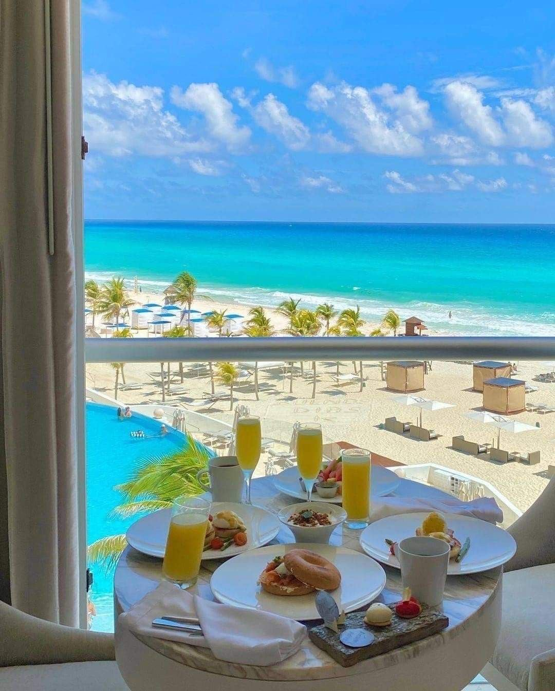
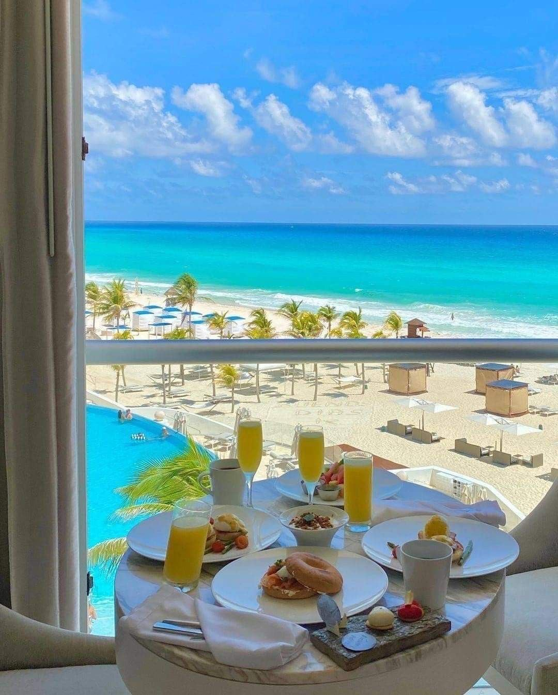

The Best Place
To Enjoy
Your Life
ABOUT US
Discover All Corners of
The World With Us
1 q
Far far away, behind the word mountains, far from the countries Vokalia and Consonantia, there live the blind texts. Separated they live in Bookmarksgrove right at the coast of the Semantics, a large language ocean.
A small river named Duden flows by their place and supplies it with the necessary regelialia. It is a paradisematic country, in which roasted parts of sentences fly into your mouth.
 

WHAT WE SERVE
We Provide Top Destinations
Far far away, behind the word mountains, far from the countries
Vokalia and Consonantia, there live the
blind texts. Separated they live in Bookmarksgrove right at the coast of the Semantics, a large language
ocean.